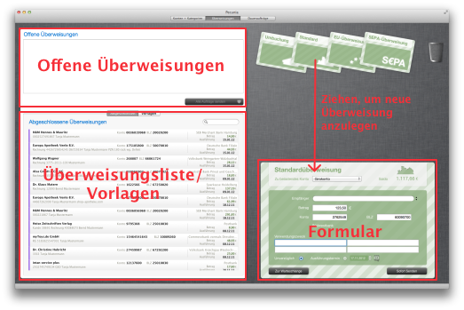

Die Überweisungssicht

In der Überweisungssicht erstellen und verwalten Sie Überweisungen und Überweisungsvorlagen. Die Überweissungssicht besteht aus 3 Bereichen:
- Im Bereich links oben sehen Sie eine Liste aller noch nicht an die Bank übermittelten Überweisungen. Wenn Sie auf die Schaltfläche Alle Aufträge senden klicken werden die Aufträge zur Bank gesendet. Existieren für ein Konto mehrere Überweisungen, prüft Pecunia die Kontoeinstellungen bezüglich Sammelverarbeitung. Ist im Konto angegeben, dass Sammelüberweisungen auf Anfrage oder immer durchgeführt werden sollen, werden die Umsätze für das Konto zusammengefasst und als eine Sammelüberweisung gesendet.
- Im Bereich links unten sehen Sie die Liste der bereits gesendeten Überweisungen bzw. die Liste der Überweisungsvorlagen. Die Listen können über die Schaltflächen Abgeschlossen bzw. Vorlagen umgeschaltet werden.
- Im Bereich rechts erstellen Sie Überweisungen. Sie haben die Wahl zwischen Standardüberweisung (Inlandsüberweisung), Umbuchung, EU-Auslandsüberweisung (ohne Meldeteil) und SEPA-Überweisung. Wählen Sie den gewünschten Typ indem Sie das entsprechende Muster in den Bearbeitungsbereich rechts unten ziehen. Bestimmen sie dann das Konto, welches belastet werden soll und füllen Sie die Felder auf dem Überweisungsformular. Wenn das Konto bzw. der Geschäftsvorfall eine Terminierung erlaubt, können Sie im Formular unten ein Zieldatum eintragen.
Wenn Sie mit der Überweisung fertig sind, können Sie sie entweder direkt senden (Sofort Senden) oder in die Warteschlange stellen (Zur Warteschlange).
Arbeiten mit Überweisungsvorlagen
Sie erstellen eine Überweisungsvorlage indem Sie einfach eine Überweisung aus dem Arbeitsbereich in die Vorlagen-Liste ziehen. Es erscheint ein Dialog, in dem Sie einen Namen für die Vorlage bestimmen. Mit dem Namen können Sie später die Vorlage leichter finden.Sie können auch aus bereits abgeschlossenen Überweisungen Vorlagen erzeugen. Ziehen Sie dazu einfach eine abgeschlossene Überweisung in den Arbeitsbereich und danach in die Vorlagenliste.
Arbeiten Sie wann immer möglich mit Überweisungsvorlagen, sie die Gefahr von Falscheingaben minimieren. Bitte beachten Sie dass die Bank nicht haftet wenn Sie versehentlich eine falsche Kontonummer oder Bankleitzahl eintragen.
 |
Prüfen Sie Ihre Vorlagen von Zeit zu Zeit, da auch Unternehmen und Behörden gelegentlich ihre Kontoverbindungen ändern. In der Regel sind dann zwar die alten Verbindungen noch eine Weile aktiv, aber eben nicht für immer. |